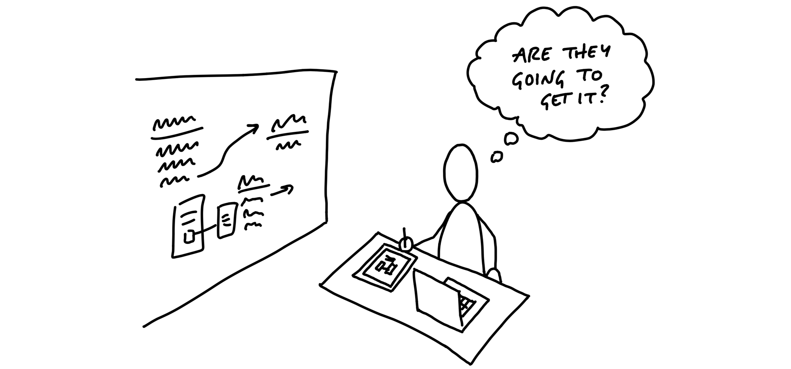
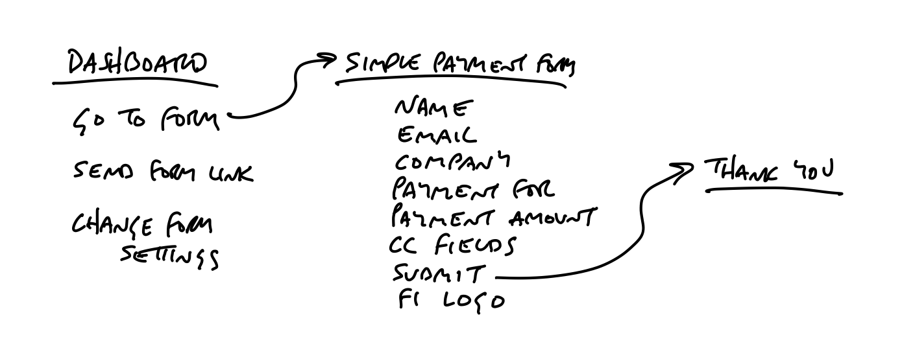
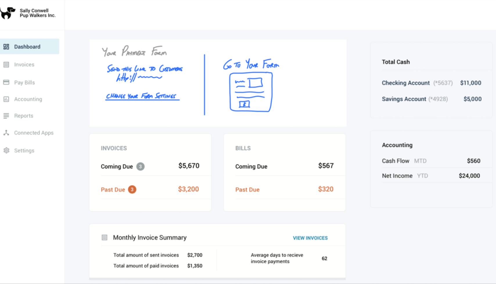
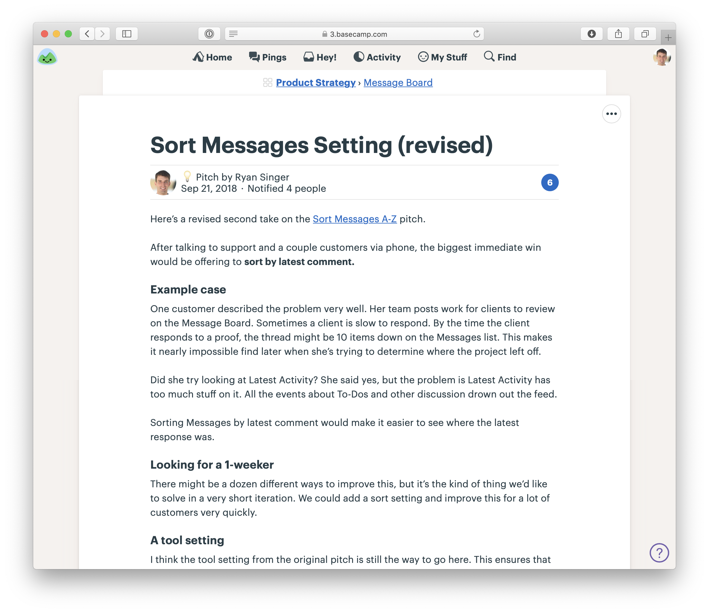

第六章 Write the Pitch 撰寫提案¶

We’ve got the elements of a solution now, and we’ve de-risked our concept to the point that we’re confident it’s a good option to give a team. But the concept is still in our heads or in some hard-to-decipher drawings on the whiteboard or our notebook. Now we need to put the concept into a form that other people will be able to understand, digest, and respond to.
我們現在已經擁有了解決方案的元素，並且將我們的概念去風險化，讓我們有信心它是交給團隊的好選擇。但這個概念仍然只在我們腦海中，或者只是白板或筆記本上難以解讀的圖示。現在，我們需要將這個概念轉換成其他人能理解、消化並作出回應的形式。
This is where we say “Okay, this is ready to write up as a pitch.” In this chapter, we’ll walk through the ingredients of a pitch and show some fully worked out examples from real projects at Basecamp.
這時候我們就可以說：「好了，這準備好可以寫成一份提案了。」在這一章中，我們將逐步介紹提案的要素，並展示來自Basecamp真實專案的完整範例。
The purpose of the pitch is to present a good potential bet. It’s basically a presentation. The ingredients are all the things that we need to both capture the work done so far and present it in a form that will enable the people who schedule projects to make an informed bet.
提案的目的是呈現一個好的潛在選擇。基本上，它是一個演示。所需的要素是所有我們需要的內容，既能捕捉到目前為止所做的工作，又能以一個讓負責安排專案的人能做出明智選擇的形式來呈現。
There are five ingredients that we always want to include in a pitch:
在提案中，我們總是希望包含以下五個要素：
- Problem — The raw idea, a use case, or something we’ve seen that motivates us to work on this
- Appetite — How much time we want to spend and how that constrains the solution
- Solution — The core elements we came up with, presented in a form that’s easy for people to immediately understand
- Rabbit holes — Details about the solution worth calling out to avoid problems
- No-gos — Anything specifically excluded from the concept: functionality or use cases we intentionally aren’t covering to fit the appetite or make the problem tractable
- 問題 — 原始的想法、一個使用案例，或是我們所看到的某些情境，激發我們去解決這個問題的動力。
- 需求範圍 — 我們希望投入多少時間，以及這對解決方案的限制。
- 解決方案 — 我們提出的核心要素，並以簡單易懂的方式呈現，讓人能夠立即理解。
- 潛在風險 — 有關解決方案的細節，值得強調以避免未來的問題。
- 不考慮的功能 — 明確排除在概念之外的部分：我們有意不覆蓋的功能或使用案例，以符合需求範圍或使問題可解決。
Ingredient 1. Problem 要素一：問題¶
It’s critical to always present both a problem and a solution together. It sounds like an obvious point but it’s surprising how often teams, our own included, jump to a solution with the assumption that it’s obvious why it’s a good idea to build this thing.
將問題與解決方案一起呈現是至關重要的。這聽起來像是一個顯而易見的觀點，但令人驚訝的是，團隊，包括我們自己，經常會在沒有清楚闡明問題的情況下，直接跳到解決方案，假設為何這個解決方案是好的想法是顯而易見的。
Diving straight into “what to build”—the solution—is dangerous. You don’t establish any basis for discussing whether this solution is good or bad without a problem. “Add tabs to the iPad app” might be attractive to UI designers, but what’s to prevent the discussion from devolving into a long debate about different UI approaches? Without a specific problem, there’s no test of fitness to judge whether one solution is better than the other.
直接跳入「要建什麼」——解決方案——是危險的。沒有問題作為基礎，我們無法討論這個解決方案是好還是不好。「為 iPad 應用程式添加標籤頁」可能對 UI 設計師有吸引力，但這樣的討論可能會變成一場關於不同 UI 方法的長時間辯論。如果沒有具體的問題，我們無法測試哪個解決方案更適合。
Establishing the problem also lets us have a clearer conversation later when it’s time to pitch the idea or bet on it. The solution might be perfect, but what if the problem only happens to customers who are known to be a poor fit to the product? We could spend six weeks on an ingenious solution that only benefits a small percentage of customers known to have low retention. We want to be able to separate out that discussion about the demand so we don’t spend time on a good solution that doesn’t benefit the right people.
明確提出問題還能讓我們在稍後提案或賭注時進行更清晰的討論。解決方案可能完美，但如果問題只是發生在那些顯然不適合該產品的客戶身上呢？我們可能會花六周時間解決一個巧妙的方案，但它只對一小部分客戶有效，而這些客戶的留存率低。我們希望能將這樣的需求討論分開，這樣我們就不會花時間在一個好解決方案上，而這個方案並不會惠及到正確的人群。
How far you have to go to spell out the problem will depend on how much context you share with the people reading the write-up. The best problem definition consists of a single specific story that shows why the status quo doesn’t work. This gives you a baseline to test fitness against. People will be able to weigh the solution against this specific problem—or other solutions if a debate ensues—and judge whether or not that story has a better outcome with the new solution swapped in.
你需要在多大程度上闡明問題，將取決於你與讀者共享的背景資訊。最好的問題定義是一個具體的故事，展示為何現狀無法解決問題。這為我們提供了一個「基準」來測試解決方案的適用性。人們將能夠將解決方案與這個具體的問題進行比較——如果發生辯論，也能將不同的解決方案進行對比——並評估這個故事在新解決方案替代舊方案後，是否能夠取得更好的結果。
Ingredient 2. Appetite 要素二：需求範圍¶
You can think of the appetite as another part of the problem definition. Not only do we want to solve this use case, we want to come up with a way to do it in six weeks, not three months, or—in the case of a small batch project—two weeks, not the whole six weeks.
你可以將「需求範圍」視為問題定義的另一部分。我們不僅希望解決這個使用案例，還希望在六週內完成，而不是三個月，或者在「小批量」專案的情況下，可能是兩週，而不是六週的全部時間。
Stating the appetite in the pitch prevents unproductive conversations. There’s always a better solution. The question is, if we only care enough to spend two weeks on this now, how does this specific solution look?
在提案中明確說明需求範圍可以防止無效的討論。總是有更好的解決方案，問題是，如果我們現在只願意投入兩週時間來解決這個問題，那麼**這個具體的解決方案**會是怎麼樣？
Anybody can suggest expensive and complicated solutions. It takes work and design insight to get to a simple idea that fits in a small time box. Stating the appetite and embracing it as a constraint turns everyone into a partner in that process.
任何人都可以提出昂貴且複雜的解決方案，但要達成一個簡單、符合時間限制的想法，則需要工作和設計的洞察力。明確說明需求範圍並將其視為一個限制條件，可以讓每個人都成為這個過程中的合作夥伴。
Ingredient 3. Solution 要素三：解決方案¶
Like solutions with no problems, sometimes companies bet on problems with no solution. “We really need to make it easier to find things on the messages section. Customers are complaining about it.”
就像沒有問題的解決方案一樣，有時候公司會對沒有解決方案的問題下注。「我們真的需要讓訊息區域更容易搜尋。客戶抱怨這個問題。」
That’s not ready to pitch or bet on. A problem without a solution is unshaped work. Giving it to a team means pushing research and exploration down to the wrong level, where the skillsets, time limit, and risk profile (thin vs. heavy tailed) are all misaligned.
這樣的問題還不能提案或下注。沒有解決方案的問題是未經塑造的工作。將這樣的問題交給團隊意味著將研究和探索推向錯誤的層級，在那裡，技能組合、時間限制和風險輪廓（薄尾 vs. 重尾）都會不對等。
If the solution isn’t there, someone should go back and do the shaping work on the shaping track. It’s only ready to bet on when problem, appetite, and solution come together. Then you can scrutinize the fit between problem and solution and judge whether it’s a good bet or not.
如果解決方案還沒想好，應該回過頭來在塑造的過程中進行深入探索。只有當問題、需求範圍和解決方案三者結合在一起時，才可以考慮下注。這時，你就能夠仔細檢視問題與解決方案之間的契合度，並判斷這是否是一個好的選擇。
Help them see it 幫助他們理解¶
During the elements phase, it was critical to sketch ideas at the right level of abstraction so we didn’t slow down or lose any of the ideas appearing at the corners of our brains and tips of our tongues.
在元素階段，關鍵是以合適的抽象層次草擬想法，以避免拖慢進度或錯過任何在我們腦海邊緣或口中一觸即發的想法。
We also need to draw at the right level of detail when we write the pitch. Here the challenge is a little different. We have time to slow down and prepare a proper presentation. We need to stay high level, but add a little more concreteness than when we worked alone or with a partner. People who read the pitch and look at the drawings without much context need to “get” the idea.
當我們撰寫提案時，我們也需要在適當的細節層次上進行繪製。這裡的挑戰稍微不同一些。我們有時間放慢腳步，準備一個正式的演示。我們需要保持高層次的視角，但也要比在獨立工作或與夥伴合作時更具具體性。那些閱讀提案並查看圖示但缺乏背景知識的人，需要能夠「理解」這個想法。
We need more concreteness, but we don’t want to over-specify the design with wireframes or high-fidelity mocks. They’ll box in the designers who do the work later. We also risk side-tracking the discussion into topics like color, proportions, or layout that have nothing to do with the actual shaping work we did.
我們需要更多的具體性，但又不想用線框圖或高保真原型來過度規範設計。這樣會限制後來負責設計的人的創作空間。我們也可能將討論偏離正題，討論一些與實際塑造工作無關的細節，比如顏色、比例或佈局。
At the same time, hand-written breadboards have a “you had to be there” quality to them. To people who didn’t watch the breadboard unfold step by step, it can look like a soup of words and arrows.
同時，手繪的模型圖有一種“你必須親身經歷過”的特質。對於那些沒有看到模型一步步展開的人來說，可能看起來像是充滿了文字和箭頭的混亂。
Therefore we need some techniques to help people see the idea while still not going too far into irrelevant details.
因此，我們需要一些技巧，幫助大家理解這個想法，同時避免過度涉及不相關的細節。
Embedded sketches 嵌入式草圖¶
Suppose your breadboard from the shaping session looked like this:
假設你在塑形階段所畫的模型圖看起來像這樣：

People might have trouble visualizing where these new affordances go on the Dashboard. We could sketch a new box on the Dashboard to make it clearer:
人們可能會難以想像這些新的功能如何融入儀表板中。我們可以在儀表板上畫一個新框框來讓它更清楚：

But we’re still asking people to imagine too much. It’s worth the trade-off to go one step down into fat-marker detail here.
但我們仍然要求人們想像太多。在這裡，將細節進一步呈現為粗筆畫風格是值得的權衡。

This makes it easier to see what the elements are and evaluate how clearly the feature presents itself on the dashboard. The downside is we’ve gotten into some layout decisions that would have been nice to avoid. Designers should feel free to find a different design than the box divided with a vertical line. We’d add a disclaimer here in the pitch that reminds designers of the latitude they should take.
這樣做使得更容易看出元素是什麼，並評估這個功能在儀表板上的呈現方式有多清楚。缺點是，我們已經進入了一些布局決策，這些決策本來可以避免的。設計師應該可以自由選擇不同於這個用垂直線分隔的框架設計。我們會在提案中加上一個免責聲明，提醒設計師他們可以有的設計空間。
This is an example of selectively getting into more visual detail because we need it to sell the concept. Fortunately, we won’t need to make as many visual decisions in other parts of the concept. This was a “linchpin” part of the design that everybody had to see concretely in order to “get” it.
這是一個根據需要選擇性地進入更多視覺細節的例子，因為我們需要這些細節來讓概念更容易理解。幸運的是，在概念的其他部分，我們不需要做這麼多視覺決策。這是設計中的「關鍵」部分，每個人必須具體看到這部分，才能真正理解整個概念。
Annotated fat marker sketches 標註過的粗筆畫草圖¶
Sometimes ideas are inherently visual or a little too complicated to express in a schematic breadboard. Fat marker sketches can be very effective in a pitch; you just need to take more care to label them cleanly.
有時候，想法本身就是視覺化的，或者太過複雜，無法用簡單的模型圖表達。粗筆畫草圖在提案中可以非常有效；你只需要更小心地為它們加上清晰的標註。
Redrawing the sketch on an iPad—still with a fat brush size—works well. You can use different colors to separate the labels from the material parts of the sketch.
在 iPad 上重新畫草圖——仍然使用粗筆刷——效果很好。你可以使用不同的顏色來區分標註與草圖中的具體元素。

Or you might add some call-outs to enable discussion of specific elements.
或者，你也可以加入一些標註框來便於討論特定的元素。

Ingredient 4. Rabbit holes 要素四：潛在風險¶
Sometimes addressing a rabbit hole just requires a few lines of text. For example, in the Payment Form project above, the shapers wanted to call out a specific solution for how to create URLs. The URLs would never live on custom domains for v1 of the project. This is the kind of thing that’s not central to the concept, but spelling it out patches a potential rabbit hole.
有時候，解決一個潛在問題只需要幾行文字。例如，在上述的付款表單專案中，塑造者希望特別說明一個處理 URL 的方案。在專案的 v1 版本中，這些 URL 不會存在於自訂網域上。這類細節雖然不是概念的核心，但明確寫出來可以避免潛在的問題發生。
Ingredient 5. No Gos 要素五：不考慮的功能¶
Lastly if there’s anything we’re not doing in this concept, it’s good to mention it here. In the case of the Payment Form project, the team decided up front that they wouldn’t allow any kind of WYSIWYG editing of the form. Users would only be able to provide a logo and customize the header text on a separate “customize” page. WYSIWYG might be better in some peoples’ eyes, but given the appetite it was important to mark this as a no-go.
最後，如果這個概念中有任何我們 不會 做的事情，也應該在這裡提及。例如，在付款表單專案中，團隊一開始就決定 不 支援任何形式的所見即所得編輯。使用者只能上傳標誌（logo）並在獨立的「自訂」頁面上修改標題文字。雖然有些人可能認為所見即所得會更好，但考量到需求範圍，明確將其標記為不考慮的功能是很重要的。
Examples 例子¶
Here are two examples of real pitches.
以下是兩個真實提案的例子。
This pitch for grouping to-dos together starts by showing a workaround people are using in the current design. Then it sketches out all the main ideas for how to enable optional to-do groupings.
這份待辦事項分組的提案首先展示了使用者在當前設計下所採用的替代方案，然後勾勒出所有主要概念，說明如何實現可選的待辦事項分組。

Two screenshots demonstrate the problem. Fat marker sketches describe the solution. Rabbit holes motivated some of the sketches.
兩張截圖展示了問題所在，粗筆畫草圖則描述了解決方案。而某些草圖的產生則是為了應對潛在的問題。
This pitch for changing how notifications work starts with two videos to demonstrate the problem. The black boxes toward the end are a visualization of user behavior data that supports a decision in the pitch.
這份通知系統變更的提案則是透過兩段影片來呈現問題。最後的黑色框則是用來視覺化使用者行為數據，以支持提案中的決策。

Two videos show the problem. A fat marker sketch and a breadboard describe the solution. The black boxes contain data visualizations that support trade-offs in the solution.
兩段影片呈現了問題，粗筆畫草圖與模型圖（breadboard）描述了解決方案。黑色框內的數據視覺化則用來支持解決方案中的權衡取捨。
Ready to present 準備好提案¶
The next step will be to make the case that this pitch describes a bet worth making. This can happen in a couple ways.
下一步是說明這份提案值得下注，這可以透過幾種方式進行。
We prefer asynchronous communication by default and escalate to real-time only when necessary. This gives everyone the maximum amount of time under their own control for doing real work. That means the first step for presenting a pitch is posting the write-up with all the ingredients above somewhere that stakeholders can read it on their own time. This keeps the betting table short and productive. In ideal conditions everyone has time to read the pitches in advance. And if that isn’t possible in some cases, the pitch is ready to pull up for a quick live sell.
我們預設採用非同步溝通，僅在必要時才升級為即時討論。這樣可以讓每個人最大程度地掌控自己的時間，專注於實際工作。因此，提案的第一步是將完整的提案內容發佈到一個讓決策者可以自行閱讀的地方。這樣可以讓「決策會議」更精簡且高效。
理想情況下，所有人都有時間事先閱讀提案。如果有些人無法提前看過，這份提案也已經準備好，可以在會議中快速進行即時說明。
How we do it in Basecamp 我們在 Basecamp 的做法¶
We post pitches as Messages in Basecamp. We created a Message Category called Pitch so we can easily find them. Pitches are posted to a Team called Product Strategy that can be accessed by people on the betting table.
我們將提案發佈為 Basecamp 中的 訊息（Messages），並創建了一個名為 Pitch 的訊息分類，方便快速查找。這些提案會發佈到一個名為 Product Strategy（產品策略）的團隊中，讓決策團隊的成員能夠存取並審閱提案。

Pitches on the Message Board of the Product Strategy team in Basecamp
Basecamp 內 產品策略（Product Strategy） 團隊的 訊息看板（Message Board） 上會發佈提案（Pitches）。 
{kind=link}
A pitch as a Message. Note the one-week appetite. This was a Small Batch project.
一則作為 訊息（Message） 發佈的提案。請注意其中設定的一週時間範圍，這是一個小型專案。
When we need to include a fat marker sketch in a pitch, we’ll draw it on an iPad (with Notability) and take a screenshot. Basecamp’s text editor makes it easy to insert images and caption them so they make sense in the flow of the pitch.
當我們需要在提案中加入粗筆畫草圖時，會使用 iPad（透過 Notability）來繪製，然後截圖。Basecamp 的文字編輯器讓我們能夠輕鬆插入圖片並添加說明，確保草圖在提案的脈絡中清晰易懂。
{kind=link}
A sketch drawn on an iPad in the middle of a pitch
在提案內容中插入的 iPad 草圖。
People comment on the pitch asynchronously. Not to say yes or no — that happens at the betting table — but to poke holes or contribute missing information.
人們會以非同步方式在提案下留言，但不是用來直接決定同意或否決——這個決策會在決策會議進行。相反地，留言的目的是找出潛在問題或補充可能遺漏的重要資訊。
{kind=link}
Our CTO responds with technical thoughts on the pitch.
我們的 CTO 會針對提案提供技術性意見。
In the next chapter we’ll look at the betting process in more detail to see where pitches go and how we turn them into scheduled projects
在下一章，我們將更詳細地探討決策過程，了解提案的去向，以及我們如何將它們轉化為排定的專案。